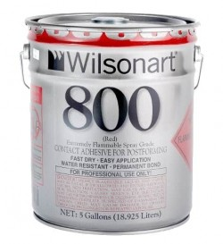
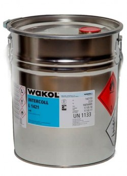
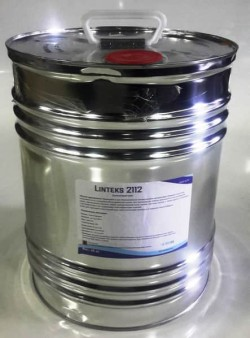
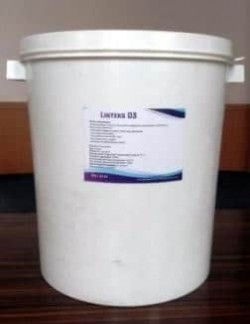
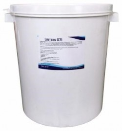

WILSONART QR 800 профессиональный контактный клей для постформирования и склеивания прямых поверхностей. Наносится ручным или автоматическим распылителем. Быстро сохнущая смесь синтетических полихлоропреновых каучуков, фенольных смол и растворителей на основе толуола, ацетона и лёгких гидро-очищенных дистиллятов . Готов к применению, не требует растворения и размешивания.
Замерзает при температуре – 9°С. Востанавливает свои свойства после пассивного размораживания.
Клей нельзя размешивать!
Поставляется в 5-галонных вёдрах (18,9 литра). Возможны поставки в 55-галлонных бочках (207,9 литров) или 330-галлонных контейнерах (1247,4) литров.
{kind=link}
|
Цвет |
Расход в готовом изделии |
Содержание |
Максимальное время выдержки |
Время схватывания |
Вязкость |
Плотность |
Содержание органических летучих веществ |
|
Красный/бесцветный |
3,54 |
19,0±1,0 |
30 |
3-5 |
90 |
0,8 |
418 |
Область применения WAKOL Intercoll L 1421:
{kind=link}
Для склеивания облицовочных материалов, HPL, дерева, HDF, строительного картона, ткани, кожи, полистирольных материалов, полиуретановой пены, а также других, устойчивых к растворителям и не содержащих пластификаторов изделий.
INTERCOLL L 1421 – контактный клей для нанесения распылением, имеет хорошую начальную прочность и хорошую теплостойкость. Клей дает прочный и эластичный шов.
Преимущества WAKOL Intercoll L 1421:
- многоцелевое применение
- высокая начальная прочность
- устойчив к старению стойкость к действию спирта, растворам кислот и щелочей
Технические характеристики:
|
Вязкость (по Брукфильду): |
200 мПа*c |
|
Плотность: |
около 0,83 г/мл |
|
Расход клея: |
150 - 200 г/м2 |
|
Сухой остаток: |
около 18% |
|
Способ нанесения: |
распыление |
|
Размер форсунок: |
1,5 - 2,5 мм |
|
Давление: |
2-4 бар |
Применение WAKOL Intercoll L 1421:
Клей следует нанести на обе поверхности с помощью пульверизатора. После нанесения клей следует выдержать на открытом воздухе положенное время. Данное время зависит от толщины клеевого слоя, основы и условий в рабочем помещении. Наилучшее время для склейки наступает, как только пленка поверх клеевого слоя перестает быть влажной, но остается липкой. Поверхности должны быть состыкованы точно, так как последующие сдвиги невозможны. Приблизительный расход клея 150-200 г/м²
Детали следует совместить и спрессовать. Начальная прочность склеивания достаточно для дальнейшей обработки изделия. Окончательная прочность достигается через 48 часов.
Во время использования продукта температура основ, цеха и клея должна быть в пределах + 15°С и +25°С.
Очистка
Растворитель 31
Хранение
Около 12 месяцев в плотно закрытой таре. Температура хранения не ниже + 10°С, чувствителен к морозу.
Linteks 2112
{kind=link}
Made in EU
Контактный клей
Область применения: Применяется для облицовывания декоративными материалами (бумажнослоистым пластиком и т.п.) поверхностей на древесной основе, при производстве мебели; используется для склеивания кожи, строительного картона, ткани, полиуретановой пены, а также других, устойчивых к растворителям и не содержащих пластификаторов изделий. Отлично склеивает шпон, подходит для постформинга.
Клей дает прочный и эластичный шов, имеет начальную прочность и хорошую теплостойкость.
Техническое описание:
Основа: полихлоропрен
Вязкость: 450-550 mPa.s
Цвет: красный
Сухой остаток: 17%
Расход клея: 90-140 г/м2
Срок хранения: 12 месяцев
Применение: Рабочие поверхности должны быть тщательно отшлифованы, очищены от жира и грязи. Перед применением клей тщательно перемешать.
Клей наносится на обе поверхности кистью или клеенаносящим пистолетом с диаметром сопла 1,6-2,5 мм, давление 3-5 атм. Соединяемые поверхности должны быть покрыты равномерным слоем клея. После нанесения клея обе поверхности должны высохнуть 3-10 минут (до отлипа), после чего поверхности соединить. Поверхности должны быть состыкованы точно, т.к. последующие сдвиги невозможны.
Детали поместить под пресс. Начальная прочность склеивания достаточна для дальнейшей обработки изделия. Окончательная прочность достигается через 48 часов.
Тара: 16 кг
Хранение и транспортировка: Температура хранения и транспортировки продукта в оригинальной упаковке от +5 до 300С .
Внимание: Легковоспламеняемая жидкость. Работы проводить вдали от открытых источников огня в хорошо проветриваемом помещении. Использовать защитные перчатки. При попадании на кожу рук и в глаза тщательно промыть водой. Беречь от детей. Опасно.
Linteks D3
{kind=link}
Область применения:
- Индустриальный клей для водостойких соединений в соответствии с DIN EN 204, качество склеивания D3;
- Склеивание твердых и экзотических пород древесины;
- Склеивание щита, бруса;
- Склеивание по пласти HPL-плит;
- Склеивание окон и дверей; лестниц;
- Пригоден для приклеивания шпона;
Техническое описание:
Вязкость: 9000-12000 mPa.s
Цвет: белый
Сухой остаток: 50%
Расход: 90 – 150 гр/м2
Минимальная температура образования пленки, °С: +6
Время открытой выдержки: 5-8 минут
Влажность древесины: 8-12%;
Оптимальная рабочая температура: 18-20°С;
Не склеивать при температуре ниже +10°С;
Срок хранения: 6 месяцев
Применение: Рабочие поверхности должны быть тщательно отшлифованы, очищены от жира и грязи. Неровности могут вызвать повышение времени прессования и снижение прочности клеевого шва.
Перед применением клей тщательно перемешать.
Клей наносится стандартным инструментом на основу. Толщина клеевого слоя зависит от абсорбции и других показателей состояния материала, подлежащего обработке. Не наносить при температуре материала и помещения менее +100С. В течении времени открытой (закрытой) выдержки изделие необходимо собрать и начать прессование.
Машинную обработку деталей следует производить через 24 часа после склеивания. Водостойкость группы D3 по EN 204 проверяется через 7 суток.
Время отверждения: 24 часа; полное отверждение через 7 дней.
Примечание: Остатки клея с изделий, оборудования и инструментов смыть теплой водой , не дожидаясь высыхания.
Не оставлять упаковку открытой на продолжительное время, возможно образование пленки на поверхности. Во избежании этого плотно закрывать крышку, если продукт не используется.
Упаковка: Ведро 30 кг
Хранение и транспортировка: Температура хранения и транспортировки продукта в оригинальной упаковке от +5 до 300С (в противном случае клеевая система теряет свои качества и в дальнейшем не пригодна к использованию).
Не допускать замораживания. Избегать нагревания емкости выше 300С
Linteks 071
{kind=link}
Область применения: Однокомпонентный клей на основе полиуретановой дисперсии, предназначенный для 3D - облицовывания рельефных поверхностей деталей из древесины и материалов на древесной основе (ДСП, ДВП, МДФ и тп.) декоративными материалами (термопластичными пленками ПВХ, ПЭТ, АБС и др.) в мембранно-вакуумных прессах. Обладает повышенной термостойкостью.
Свойства:
Клеевой шов, в готовом изделии обладает устойчивостью к воздействию влаги и пара, термостойкостью до 1250С, морозостойкостью до "- 400С";
Техническое описание:
Основа : полиуретановая дисперсия
Цвет: белый (по запросу голубой)
Вязкость при 20°С: 1700 mPa.s-2300 mPa.s
Плотность: 1,04 г/см3
Уровень pH: ~ 8
Термостойкость клеевой основы: от 120°-125°С
Минимальная температура активации: 55-650С
Сухой остаток: 42%
Расход: 50 г/м2 (ровная поверхность, пласть)
100г/м2 (рельефная поверхность, торцы)
Срок хранения: 6 месяцев
Применение: Перед облицовыванием материалы должны быть очищены от пыли, жиров, масел. Клей распыляется на поверхность при помощи пистолета.
Перед заполнением емкости распылительного устройства клей необходимо перемешать.
Рекомендуемые данные для распыления пистолетом:
- давление при распылении 2,5-4 бар;
- оптимальный диаметр сопла 1,2-2,0 мм.
Клей наносится на основу, выдержанную до комнатной температуры (17-20оС). Температура склеиваемых материалов, также как и клея, должна быть не ниже комнатной. Не проводить склеивание при температуре в цехе ниже +100С. На пласть достаточно нанести один слой клея. После нанесения первого слоя на все части обрабатываемой детали и его высыхания, наносится второй слой, на кромку, фрезерованные и закругленные части поверхности. При распылении первого слоя рекомендуется наносить минимальное количество клея ,во избежание закупорки пор и заливания поверхности. время нанесения второго слоя клей должен быть виден невооруженным глазом. Качество поверхности с уже нанесенной клеевой системой зависит не только от техники нанесения и клея, а также от качества МДФ. После нанесения клеевой системы детали раскладываются на этажерочной тележке. Время высыхания составляет не менее 30 минут в зависимости от температуры в помещении и влажности воздуха. Сократить длительность сушки можно за счет обдува деталей сухим теплым воздухом. Время сушки сокращается на 10-15 минут по сравнению с сушкой без обдува. После сушки детали с клеем укладываются в пресс. Полный цикл прессования составляет 3-5 минут. Наиболее оптимальная температура в области между 900С-1400С в зависимости от типа пленки , глубины профиля и технологии прессования. Необходимо обратить внимание на то, что во время вакуумного вытягивания и прессования в клеевом шве должна достигаться температура не менее 55-650С. Этим обеспечивается 100% активация клея.
Время отверждения: 24 часа; полное отверждение через 7 дней
Примечание: Остатки клея с изделий, оборудования и инструментов смыть теплой водой , не дожидаясь высыхания.
Не оставлять упаковку открытой на продолжительное время, возможно образование пленки на поверхности. Во избежании этого плотно закрывать крышку, если продукт не используется.
Упаковка: Ведро 30 кг
Хранение и транспортировка: Температура хранения и транспортировки продукта в оригинальной упаковке от +5 до 300С. (в противном случае клеевая система теряет свои качества и в дальнейшем не пригодна к использованию).
Не допускать замораживания.
Избегать нагревания емкости выше 300С
В каталоге нашей компании представлен широкий ассортимент клеев, способных быстро и качественно склеить прямые поверхности. Одним из наиболее востребованных является контактный клей для пластика Wilsonart 800. Он станет незаменимым помощником для тех, кто занимается мебельным производством. Клей разработан лучшими специалистами, в его состав входят исключительно безопасные компоненты. Этот продукт широко используется многими компаниями, которые изготавливают столешницы, элементы декора из бумажно-слоистого декоративного пластика.
Купив клей Wilsonart 800 у нас, вы сможете быть абсолютно уверены в его отличных эксплуатационных характеристиках, так как мы предлагаем только лучшую продукцию, проверенную временем и пользующуюся огромной популярностью во всем мире.
Основные достоинства контактного клея
К основным преимуществам контактных клеев можно отнести следующее:
- Перед началом работ их не нужно предварительно разводить или размешивать, они полностью готовы к применению после вскрытия упаковки.
- Для нанесения контактного клея можно использовать любой удобный инструмент, это может быть кисть, валик, распылитель и т.д.
- Их можно замораживать и размораживать несколько раз, в процессе они не потеряют своих свойств и характеристик.
- Время открытой выдержки – около получаса, это довольно внушительный период по сравнению с аналогами, которые выдерживают всего лишь восемь минут.
- При склеивании пластика клеем Wilsonart 800 или другим контактным составом, представленным на сайте, не обязательно использовать тяжелый пресс, чтобы плотно прижать элементы друг к другу. Достаточно просто пройтись жестким валиком по поверхности.
- При помощи этих клеящих составов достигается максимальная экологичность интерьера, так как они не имеют вредных химических примесей, негативно влияющих на здоровье человека и окружающую среду.
- Производитель дает гарантию на продукцию собственного производства до 12 месяцев.
- Удобная расфасовка позволяет приобрести нужное количество клея для выполнения работ по склеиванию бумажно-слоистого пластика. Поставляется в удобных, хорошо закрытых емкостях, которые защищают жидкость от негативных условий во время транспортировки.
У нас вы можете не только приобрести контактные клеи высокого качества, а и получить квалифицированную консультацию по их правильному применению. Мы поможем подобрать подходящий клеящий состав, который идеально подойдет для конкретных видов работ.
Заказывайте прямо сейчас контактный клей Wilsonart 800 или другие контактные составы по доступной цене в нашей компании, и вы лично убедитесь в их непревзойденных характеристиках!